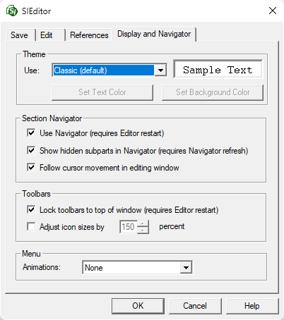
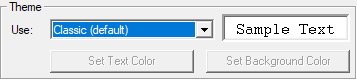
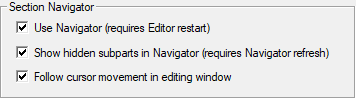
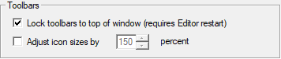
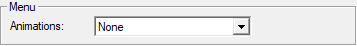

This command can also be executed from the SI Editor's View menu, the Toolbar Options  button at the end of the Toolbar. or by right-clicking on the Title Bar of the Menu Bar, Toolbar, Tagsbar, or Navigator.
button at the end of the Toolbar. or by right-clicking on the Title Bar of the Menu Bar, Toolbar, Tagsbar, or Navigator.
The Display and Navigator options provide control over various aspects of the SI Editor's behaviors and display of its Theme, Section Navigator, Toolbars, and Menu.

Themes
The SI Editor lets you personalize your visual experience with various light and dark themes, accommodating individual preferences and accessibility needs. By default, it uses the familiar Classic light mode, but you can choose from other themes or create a custom one to fine-tune the contrast.

 The Theme selection controls the color settings for the application window and menus, including submenus. The SpecsIntact colored tags remain unchanged, with their default settings, but they are enhanced.
The Theme selection controls the color settings for the application window and menus, including submenus. The SpecsIntact colored tags remain unchanged, with their default settings, but they are enhanced.
- Classic (default): The default Classic theme offers a traditional light mode experience with a clean, white background, complemented by black and colored fonts for readability, and light silver menus and toolbars.
- Twilight: This dark mode theme offers a dark gray background, yellow and colored fonts for readability, and medium gray menus and toolbars.
- Deep Blue: This dark mode theme offers a deep blue background, light gray and colored fonts for readability, and medium gray menus and toolbars.
- Midnight (high contrast): This dark mode theme offers a high-contrast black background, white and colored fonts for readability, and medium gray menus and toolbars.
- Custom: The custom theme offers the flexibility to control and easily define the look of your text and background color by providing a range of color selections.
Section Navigator

- Use Navigator (requires Editor restart): Selecting this option automatically displays the Navigator in the SI Editor. You must restart the SI Editor for the change to take effect.
- Show hidden subparts in Navigator (requires Navigator refresh): This setting enables the display of hidden Subparts in the SI Editor, such as deleted Subparts when editing with revisions and metric units when the job is configured for English units. When Subparts are hidden, the Navigator icons are transparent. To learn more, refer to the Navigator Overview topic.
- Follow cursor movement in editing window: Selecting this option synchronizes the Navigator's position with your cursor in the Editing window.
Toolbars

- Lock toolbars to top of window (requires Editor restart): This option ensures the Toolbar and Tagsbar remain permanently at the top of the application window. Unchecking this box positions the Toolbar and Tagsbar on the left-side of the application window, and allows to drag-and-drop them to different locations, providing a custom layout. Before locking the toolbars, move the toolbars to a floating or top position.
- Adjust icon sizes by percent: This option lets you resize Toolbar and Tagsbar icons. It's off by default and requires an SI Editor restart when enabled. Settings can be reset through the SI Explorer's Setup menu > Reset Settings by checking the Editor view settings option.
menu

- Animations: This option allows you to change the visual appearance of drop-down menus with animation effects. By default, no animation is applied, but it can be changed to Unfold, Slide, or Fade.
Standard Windows Commands
 The OK button will execute and save the selections made.
The OK button will execute and save the selections made.
 The Cancel button will close the window without recording any selections or changes entered.
The Cancel button will close the window without recording any selections or changes entered.
 The Help button will open the Help Topic for this window.
The Help button will open the Help Topic for this window.